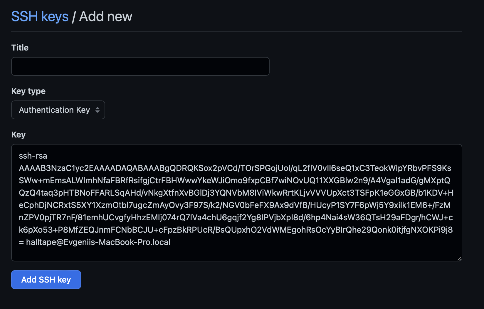
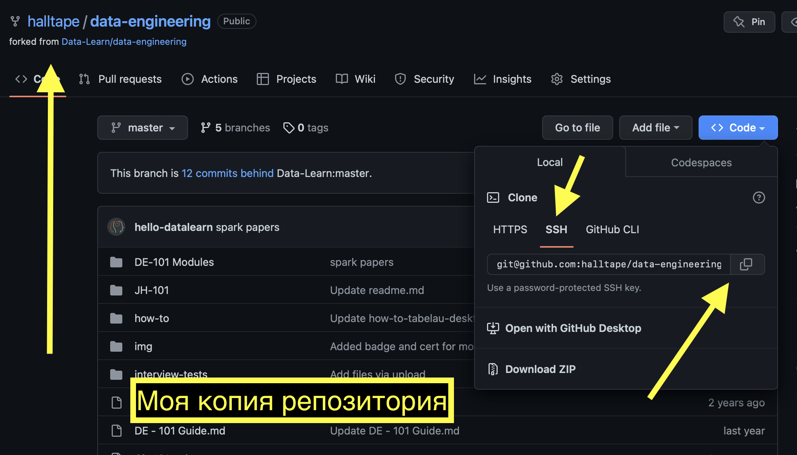

Как подключиться к Github?
Github - это обычный сайт, где каждый может загрузить туда cвой код или скачать его оттуда. Есть репозитории (на "земном" папки ), в которых и хранится вся информация. Ниже инструкция, как работать с github.
С гитом можно работать, как через Terminal, так и через VSCode или другую IDE (последнее проще).
Работа через Terminal (Mac) или PowerShell (Win):
Сначала подключимся к Github через terminal. Для этого нам нужно создать ключ (ссылку), который свяжет наш компьютер с Github. Заходим в terminal или командную строку. Пишем:
Создаем ssh-keygen
ssh-keygen - Нажимаем везде Enter. В моем случае пришлось еще нажать y в Overwrite (y/n)? и пересоздать ключ, так как он у меня уже был
(base) halltape@Evgeniis-MacBook-Pro ~ % ssh-keygen Generating public/private rsa key pair. Enter file in which to save the key (/Users/halltape/.ssh/id_rsa): /Users/halltape/.ssh/id_rsa already exists. Overwrite (y/n)? y Enter passphrase (empty for no passphrase): Enter same passphrase again: Your identification has been saved in /Users/halltape/.ssh/id_rsa Your public key has been saved in /Users/halltape/.ssh/id_rsa.pub The key fingerprint is: SHA256:vBzK7g4/3zcA3wUb9HLpoaCHLudJ1qsaXg12J9bchaI halltape@Evgeniis-MacBook-Pro.local The key's randomart image is: +---[RSA 3072]----+ | .. | | o. o | | . o+* .| | ..o =.B.o | | SoE.=.o | | . = Xoo. | | . = O o. | | =.O o .o | | oB+=.o. . | +----[SHA256]-----+
Дальше нам нужно открыть файл, где создался этот ключ (просто шифр из многобукв). Username у вас свой!
Показать ssh-keygen
cat /Users/username/.ssh/id_rsa.pub - Копируем все, начиная от ssh-rsa до local
(base) halltape@Evgeniis-MacBook-Pro ~ % cat /Users/halltape/.ssh/id_rsa.pub ssh-rsa AAAAB3NzaC1yc2EAAAADAQABAAABgQDRQ KSox2pVCd/TOrSPGojUoIqL2flV0vII6seQ1xC3T eokWlpYRbvPFS9KsSW+mEmsALWlmhNfaFBRfRsifgjCt rFBHWwwYkeWJiOmo9fxpCBf7wi4reg8458634hjge804 NOvUQ11XXGBlw2nA4Vgal1adGgMXptQQzQ4taq3pHTBNoFFARLSA /vNkgXtfnXvBGlDj3YQNVbM8IViWkwR rtKLjvVVVUpXct3TSFpK1eGGxGB/b1KDV+HeCOOKPi9j8=hallta pe@Evgeniis-MacBook-Pro.local (base) halltape@Evgeniis-MacBook-Pro ~ %
Подключим свой Github с помощью SSH
Заходим в настройки SSH and GPG keys. Нажимаем New SSH key

Вставляем скопированный ssh-keygen


Супер! Теперь мы можем скачивать все, что угодно с GitHub!
Но прежде, чем скачать репозиторий к себе на ПК, следует сделать его копию у себя на Github.
Это будет лично ваша копия, с которой вы можете делать все что угодно (изменять, удалять, добавлять и т.д.)
Но если создаете свой собственный репозиторий, то конечно Fork делать не нужно

В terminal (командная строка) заходим в папку, куда мы хотим скачать наш репозиторий
Команда pwd покажет место, где мы находимся
pwd
Посмотреть содержимое папки
ls
Зайдите в место, куда вам будет удобно скачать репозиторий Команда cd переместит вас в папку
Допустим мы здесь Users/halltape/Desktop
cd ..
cd Downloads - В первом случае мы перемещаемся на папку выше, в папку halltape - Во втором случае мы перемещаемся в папку Downloads (можно писать любую папку в рамках тех папок, которые есть)
Установка Git
Чтобы работать с Git, нужно его установить вот так на Mac или вот так на Win
git нужен, чтобы вы могли скачивать и загружать свой код со своего компьютера на GitHub и обратно, а также отслеживать версии кода, но об этом чуть позже.
А теперь зайдите сюда.
Этот репозиторий вы должны будете скачать к себе на ПК по инструкции ниже.
Копируем ссылку на репозиторий

Команда ниже начнет скачивание репозитория с github в то место, где вы находитесь, согласно terminal. Скачать репозиторий к себе на ПК
git clone
git@github.com:halltape/data-engineering.git
- Мы скачали репозиторий к себе на ПК. Теперь у нас есть копия этой папки на компьютере. Мы можем вносить любые изменения (удалять, добавлять или править файлы в этом репозитории). Например, мы сделали домашнее задание и хотим загрузить его обратно в свой github. Но нам НЕ НУЖНО снова грузить ЦЕЛЫЙ РЕПОЗИТОРИЙ обратно. Нам достаточно обновить одну или несколько папок (файлов).
- Для этого есть 4 команды: git status, git add, git commit, git push
Посмотреть список новых или обновленных файлов на нашем ПК
git status
- Нам покажут все новые или обновленные файлы и папки, которые появились на нашем компьютере в скачанном репозитории. Он как бы отслеживает изменения.
Например я внес изменения и добавил файл HALLTAPE.txt
git status - Как видно, terminal сразу показал, что есть modified: HALLTAPE.txt
(base) halltape@Evgeniis-MacBook-Pro data-engineering % git status On branch develop Your branch is up to date with 'origin/develop'. Changes not staged for commit: (use "git add <file>..." to update what will be committed) (use "git restore <file>..." to discard changes in working directory) 'modified: HALLTAPE.txt' no changes added to commit (use "git add" and/or "git commit -a") (base) halltape@Evgeniis-MacBook-Pro data-engineering %
Добавить в список на загрузку файлы, которые нам показали при git status
- git add . - Точка здесь обязательна! Добавь все, что появилось новенького и удали то, что было удалено. Грубо говоря, мы соглашаемся со ВСЕМИ изминениями в репозитории.
- git add HALLTAPE.txt - Добавь только файл HALLTAPE.txt (можно написать название файлов через пробел. Тогда добавятся несколько)
Команда добавляет комментарий к загрузке.
- Комментарий будет отображаться на github, когда мы все загрузим. Можно писать что угодно 'yo_iam_rapper'. Это удобно для вас, чтобы вы понимали, что вы там меняли например.
НЕ ГРУЗИ НА ВЕТКУ MASTER!
- Создай ветку develop. И далее переключись на нее. На ветке master должен храниться исходник. Сейчас это не так важно, но лучше привыкнуть к этому сразуПроверь на какой ты ветке
- Команда покажет, на какой ветке ты сейчас находишься Загрузить! - Эта команда загружает все выбранные вами файлы на ветку develop. Все!Полезные ссылки